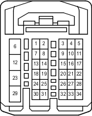

Наименование
ECM
Код
C63-I
Каталожный номер
82824-26150
Цвет
Белый
Технические характеристики
Жгуты проводов для ремонта

Расположение
Расположение деталей в панели приборов (для моделей с левосторонним рулевым управлением) 4
Расположение деталей в панели приборов (для моделей с правосторонним рулевым управлением) 4
Система
АБС (для моделей с 2TR-FE, 5L-E)
Индикатор ECT и A/T (для моделей с 2TR-FE)
Система управления двигателем (для моделей с 2TR-FE)
Освещение салона
TRC (для моделей с 2TR-FE)
VSC (для моделей с 2TR-FE)